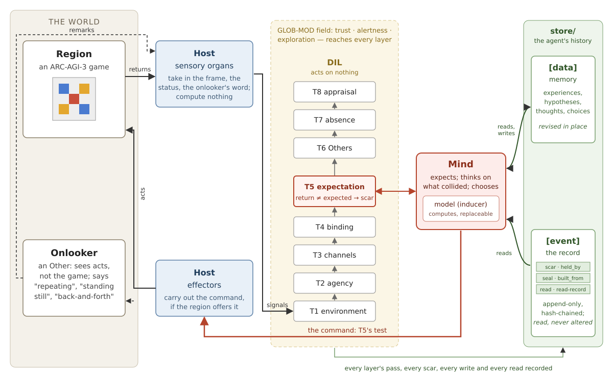
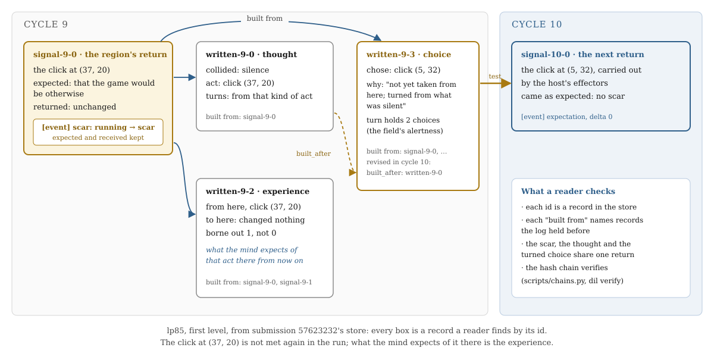

Learning From Mismatch, Every Step on the Record
Huỳnh Mai Phúc (Plone Mraz) Independent Researcher, Vietnam 2026
ORCID: 0009-0009-0571-7151
The DIL protocol on ARC-AGI-3 — a report on submission 57623232
Code: notebook plonemraz/dil-arc3-history; protocol and reference implementation: github.com/PloneMraz/dil-core
We built an agent that learns each ARC-AGI-3 game from mismatch. Before every action it expects what the game will return; when the return differs, the mismatch is recorded as a collision, and the collision turns what it does next. Every expectation, collision, thought and choice is a datum that names what it was built from, in an append-only, hash-chained event log, following the DIL protocol. The question is not how high the agent scores but whether a third party can read back, from the log alone, what it knew at each step and why it acted. On the 25 public games the submitted code's logs hold 1,111 chains a reader can follow from a collision to the thought and the choice it turned; all 1,735 turned choices are built from the return that collided, and all 25 logs verify under the protocol's reference verifier. The agent also reads its own history: 2,589 times it read the log for collisions that had come before, and 1,313 times for the steps it had taken, each read itself recorded; reading it changed no score. The submission scores 0.25 on the leaderboard, against 0.02 for the starter kit's random agent and 0.06 for the same agent on this submission's road; the score is low, and we say why.
ARC-AGI-3 scores an agent by how few actions it needs against a human, on games it has never seen. Whatever the agent knows of a game it must learn while playing it, and every action spent learning is counted. The common way to learn by acting is to maximise a summed reward. Ours learns from mismatch, an older way: the agent expects, the world answers, and where the answer differs from the expectation, the difference is what the agent learns from — not a score to raise or lower, but data that changes what it does next.
A second requirement shapes everything else. An agent that changes itself from its own experience is hard to trust unless the change can be inspected. Our question is therefore whether a third party, holding only the agent's record, can read back what the agent knew at each step, what contradicted it, and why it acted as it did — and can check that the record was not rewritten. An agent may misread and revise its memory; it may not rewrite the record of what happened.

Figure 1. The loop. The game returns a frame; the host's sensory organs take it in and compute nothing; every datum passes the eight layers T1–T8 under a global field; at T5 the mind compares the return with what it expected and commands; the host's effectors carry the command out. An onlooker in the world remarks on how the agent behaves. The store is the agent's history: its memory, [data], which it revises, and the record, [event], which it only reads.
This paper reports on one submission, and it makes four contributions:
The agent's rule for choosing is close to count-based exploration in reinforcement learning: Bellemare et al. [3] turn visit counts into an exploration bonus, and UCB1 [4] favours arms tried little; Pathak et al. [5] instead reward the error of a learned forward model. Our agent ranks acts the same way, by counts of reaching new states with UCB1's bonus. It differs in what the mismatch does: the error is not turned into a reward; it scars the data the expectation rested on, sets off a written thought that turns the next choices, and revises the experience held. There is no return summed or discounted over time and no value function, a collision never scores an act, and every datum names its sources in an append-only log. Predictive processing [6] frames perception as minimising prediction error; here the error is recorded and acted on, not minimised. On ARC-AGI-3, the preview competition was won by Tufa Labs' StochasticGoose (18 levels completed) [7]; the official page describes neither its method nor how its score is computed.
DIL (Data Integration Loop) is a protocol for an agent that runs as a closed loop over a region it interacts with, learns from collisions with what it expected, and leaves a trace a third party can audit. It is specified in two public documents — a conceptual specification and a normative protocol (version 0.3.9) — and implemented in TypeScript as dil-core, the reference implementation; the agent described here carries a Python port of it, kept in step and checked against it.
Every datum the agent meets passes eight layers on a one-directional, multi-stream meaning channel: T1 (activity and environment), T2 (agency: was this change self-written or pushed by the environment?), T3 (channels and queries), T4 (binding to a source), T5 (temporal expectation), T6 (Others), T7 (absence: what failed to come back) and T8 (multi-entity abstraction, which closes the channel back into the loop). Beside the meaning channel runs a global modulatory field, GLOB-MOD, here with three axes — trust, alertness, exploration — to which every layer contributes votes and which every layer reads as background; it carries how to read, never what is read. Eight invariants hold the loop to its form: among them, meaning is relational (INV-4: no layer assigns meaning to a signal in isolation), history accrues and is never loaded (INV-5), every change is classified as self-written or environment-pushed before it is interpreted (INV-6), and the appraisal step may not draw its criteria from the state being edited (INV-8). A violated invariant halts the loop.
The whole store is the agent's history, and DIL draws one boundary inside it. What the agent has learned — its hypotheses, its experiences, what it expects — is [data], its memory, and it may revise it. What happened to it — each observation that arrived, each command, each collision, and what every belief was built from — is [event]: the loop only appends to it, and the agent may read it but never alter it.
An agent can be wrong about its past. It must not be able to rewrite the past to prove itself right.
Every agent accumulates bias: interpretations harden into beliefs, failures are explained away, contradictions forgotten. The moment an agent can rewrite the record of how it came to its mind, it can manufacture a past in which it was never wrong. The hash chain (each line carries the SHA-256 of its sequence number, the previous line's hash, its schema version and its record) does not make a rewrite impossible; it makes one visible to anyone who checks the chain against a head published beyond the agent's reach. Human history is written after the fact, by those who keep it, and read through each reader's lens. This record is not free of bias, but its bias is of another kind: written as things happen, by a rule declared before the run, it keeps every failure as faithfully as every success, marks what the agent said of itself apart from what the world returned, and stays the same from one reader to the next — so where two readers disagree, they can return to the same record and check.
Concretely, a store holds a manifest (the run's declared constants, so a reader can re-appraise the trace under the law that governed it), a line for every datum's exit from every layer, every provenance move, every emission, every expectation (with what it was held by), every scar — a ResistEvent, carrying what was expected and what returned — every revision of a datum, every read of memory and of the record, and a seal per cycle naming the data admitted and written, each written datum with the ids it was built from. A scarred datum moves running → scar, and returns to running when it is used again: a datum never rests as a conclusion.
The protocol's §13 lists criteria a third party checks from the trace: invariants (C1), host conditions (C2), the loop (C3), the self (C4), resistance (C5), the store (C6) and failure signals (C7). dil-core ships the verifier (the chain) and the checker (the criteria) as a command-line tool; both read a store directly. C4 is partial by design — the protocol forbids an implementation to claim its own continuity, which is a third party's to say — and C2 cannot be checked from disk.
The agent is one whole, built in four roles that are not interchangeable. DIL is the mechanism by which it runs; it acts on nothing. The host is the container: its sensory organs take in what the game returns, its effectors carry out the mind's command, and it computes nothing from what it takes in. The mind is the thinking: it expects, is curious, wants, and chooses; its model is the part that computes for it, and can be replaced. The self, in DIL's terms, is not a part at all but what the loop produces as it runs. One line is never crossed: the mind acts on nothing; it commands, and the host carries the command out through its effectors. The command is T5's test — an action pushed to the region to see whether the return matches the expectation just built — and what judges it is the region's return, never the mind.
Experience. Each step — the state before, the act, the state after, and what the game reported of itself — is kept as an experience, a datum revised in place as it is met again. What an experience says is the mind's own expectation: the act there gives what it gave.
Hypotheses are data. What an experience suggests beyond itself, the model states as a hypothesis — here, a grid inducer: a cell rewritten, nothing changed, the level's aim reached by an act; once the aim has come, a thing moved, blocked, or moved into a colour. Each is written as a datum built from the step it came from.
Expecting. Before each act the mind expects, from the experiences and hypotheses that apply, the one right at the highest rate, (right + 1) / (tried + 2) — Laplace's rule of succession — held only while it has been right more often than wrong; that datum is what the expectation is (its held_by). Where nothing it knows applies, it expects the game to be otherwise than it was — the act was commanded to learn something — so silence too can collide. Every state is expected as the mind reads it: a ticking clock is not read, and so collides with nothing.
Collision. When the return differs, the return and every datum the expectation rested on move to scar, each with its own scar record. A mismatch is never a penalty: no count of collisions is kept or sought.
A collision turns the mind. The mind thinks on what collided and writes the thought, built from the return: a silence turns it away from that kind of act, an answer other than foreseen turns it toward where the answer differed, an end of the game turns it away from what led there. The turn holds for as many choices as the field's alertness says (two at neutral), and every choice it turns says so in its reason and names the return and, once its id has come back, the thought.
Choosing. Toward the aim it has reached before, or where a held hypothesis says an act brings it; otherwise each kind of act is ranked by two counted odds, in order: of the level's aim, (aims + 1) / (tried + 2) where the aim has come of it, and of reaching a state not met before, (new + 1) / (tried + 2), plus UCB1's bonus √(2 ln(N + 1) / (tried + 1)) for kinds tried little [4]. These are counts of what happened, ranked at each choice: nothing is summed or discounted over time, there is no value function, and a collision never scores an act. With attention (an option, used in the submission), the counts are read from the situations most like the present one.
The field. The mind votes on the field like every layer — on exploration, whether the game came where it had not stood; on trust, whether what its memory named was borne out — and reads it in whole counts: how sure it must be before it expects, how long a turn holds, how far it looks ahead. The field carries its history across cycles (about twenty cycles' memory), so an individual born in another field acts otherwise.
Reading its own history. The mind reads [event] through a view open to it every cycle — a link, not a switch — and each read is recorded by the place of the records in the chain. It reads it two ways. On a collision that turns it, it reads the game's scars on that source: each scar whose return collided the same way, in the same situation, by the same kind of act, holds the turn one choice longer, and the thought names those scars as event:<seq>. And the recent steps by which it weighs the onlooker's word are read from the seals of the latest cycles and from memory, not from what the mind kept for itself; its answer names the records it read.
An onlooker stands in the world, outside the agent: a separate piece of code that sees the agent's acts (as opaque tokens) and the moments without one, knows no game, and says what it sees — "repeating", "back-and-forth", "standing still". Its word reaches the mind as a collision, never as an instruction. The mind expects the onlooker to say what it said, or, once answered, to stop; a remark that comes otherwise collides. Told once that it repeats an act whose every step reached a new state, the mind keeps on and writes why; told again, it objects, and puts the named act behind every other.
The learning names no environment: no grid, colour, click, clock or level appears in it. An act is opaque to the mind; what an act is, whether the game offers it and how it is written are asked of the host's organs, and what a state is, of the model. Another model — a language model writing predictive programs was tried — plugs into the same seat; another environment needs another host and model, not another mind.
The submission is a CPU notebook with no network: the agent ships whole, with no model weights. One scorecard, each game made on it once; each game runs in a process of its own, four at once, 600 cycles a game, a deadline nine hours less twenty minutes after the start. The loop is deterministic: the same code chooses the same act, step for step, on this machine and on Kaggle.
Kaggle shows no log of a scored run; the evidence is the submitted code's Save & Run on the 25 public games, whose stores are published at github.com/PloneMraz/dil-core/releases/tag/dil-arc3-57623232-stores. Each cycle leaves in [event] the path of every datum through the layers, what entered, what was scarred, what the mind read, and each datum it wrote with the ids it was built from.

Figure 2. One chain in lp85, each box a record a reader finds by its id in the published store.
Figure 2 is one chain from lp85, where the agent finished the first level in its human baseline's 17 actions. A click at (37, 20), expected to change the game, returns it unchanged: the return signal-9-0 is scarred. The thought written-9-0 records the silence and turns the mind away from that kind of act. The next choice, written-9-3, clicks at (5, 32) and says so in its reason — "not yet taken from here; turned from what was silent" — built from the return, and, once the thought's id came back in cycle 10, revised to name it (built_after); the revision was recorded in [event] too — a revision line and the choice's entry in that cycle's seal. The experience written-9-2 now holds that the click there changes nothing; that is what the mind expects of it from then on. The next return, signal-10-0, comes as expected, and nothing collides. (The click at (37, 20) is not met again in that run.)
| What the stores hold (25 games, 600 cycles each) | Count |
|---|---|
| collisions of the game's frame (scars) | 2,715 |
| chains of a scar, the thought it set off and the choice it turned, all built from the same return | 1,111 |
| … whose next return came as expected | 716 |
| … whose act was met again where it had collided (an expectation held by that act's experience) | 56, of them 42 as expected every time |
| choices a collision turned; each built from the return that collided | 1,735; 1,735 |
| … naming the thought's id (the other two: each game's last choice, its id awaited when the run stopped) | 1,733 |
| collisions that turned the mind; the record said came before | 2,636; 167 (turns held 215 choices longer) |
| reads of the record: for collisions; for the recent steps | 2,589 (36,541 records); 1,313 (43,466) |
thoughts and choices naming a record read (event:<seq>) | 1,480 and 92 (25,858 ids) |
A chain is a collision whose thought and turned choice came in its own cycle, all built from that return. A turned choice is any choice a collision shaped: 1,198 in the collision's own cycle (87 of them chosen again after the onlooker spoke, superseding the first), 495 later ones while the turn still held, and 42 that an end of the game turned; 1,198 + 495 + 42 = 1,735.
All 25 logs verify under dil-core's verifier. Its checker passes C1 (invariants), C3 (loop), C5 (resistance) and C6 (store) in all 25; C4 is partial by design; C7 (failure signals: the loss of resistance-source diversity) fails in six — cd82, dc22, g50t, ls20, m0r0, sc25 — where the agent never looked stuck and the onlooker therefore never spoke, leaving the frame as the only source of resistance. We leave that failure visible rather than arrange a second source.
Because the field carries its history and the mind reads it in counts, the same agent born in a different field is a different individual, and the log shows where they part. Measured on version 41's code over eleven games: born neutral, 1.106; born doubting, alert and exploring, 1.016; born trusting, calm and consolidating, 1.150; alone, with no onlooker, 1.040 (the eleven games' offline score). In tu93 the doubting and the trusting individuals part at step 72: a silence at step 71 turns both away from the same act; at step 72 the first is still turned and the second no longer is — the turn's hold is one of the counts each reads of its field — and over the run they choose alike at only 213 of 599 steps. In m0r0 the agent with the onlooker and the agent alone part at step 71 the same way: the onlooker's earlier remarks had moved the field, and with it the hold; with the onlooker the agent reached the level in far fewer actions (0.80 against 0.19 on that game, one run each). scripts/differ.py finds such a parting from two stores alone.
Every count above is computed from the stores alone (the scores, from each run's scorecard): dil verify and dil conformance (dil-core's tool) for the chain and the criteria; scripts/chains.py for the chains, scripts/thoughts.py for turned choices and their thoughts, scripts/differ.py for two individuals. None reads the run's own report.
Scores are RHAE. Offline, the toolkit scores a completed level (baseline actions / actions taken)² × 100, capped at 115, an uncompleted level 0; a game's score weights its levels by their number, and the run's score is the games' mean, on a 0–100 scale. The leaderboard scores the hidden games; whether its numbers are on the same scale was not checked.
Table 1. Every submission: the leaderboard (hidden games) and the Save & Run on the 25 public games (levels of 183; score).
| Submission | Notebook, version | What it is | Leaderboard | 25 public |
|---|---|---|---|---|
| 56462757 | starter kit | the starter's random agent | 0.02 | — |
| 56600038 | gateway probe | the same random agent, on this submission's road | 0.06 | — |
| 56588469 | dil-arc3-run 12 | a language model in the learning's place, 60 cycles | 0.00 | — |
| 56623380 | dil-arc3-learning 5 | the learning mind, no weights | 0.05 | — |
| 56658708 | 12 | grid inducer, curiosity for somewhere new, attention; the rerun ended early, cause unknown | 0.00 | — |
| 56820389 | 18 | attention; the clock read in rows and columns | 0.26 | 15, 0.502 |
| 56887238 | 23 | the store as the mind's memory; experiences as its expectation | 0.25 | 13, 0.499 |
| 56934496 | 26 | suspects: where the aim may lie, tested before it has come | 0.02 | 15, 0.515 |
| 56983446 | 28 | moves, blocks and into-aims, only once the aim has come | 0.25 | 13, 0.514 |
| 57371259 | 35 | collisions turn the mind; the field carries its history | 0.26 | 16, 0.518 |
| 57443352 | 37 | as 35, its stores verifying under dil-core's verifier | 0.25 | 16, 0.491 |
| 57470744 | 41 | as 37, each turned choice naming its return and thought | 0.25 | 15, 0.489 |
| 57623232 | dil-arc3-history 1 | as 41, the mind reading its own history | 0.25 | 15, 0.489 |
The score is low. On the public games the described code completes 15 of 183 levels; its offline score, 0.489, comes almost entirely from three levels finished near or within the human baseline (lp85, r11l, tn36). Version 23's log showed where the actions go: 29% changed nothing — 2,341 untried acts the inducer did not foresee and 1,874 acts its hypotheses had foreseen would change nothing, tried last but never out of reach — and 17% were walks back to where something was left to try; every other level took 3 to 20 times the baseline. Before a level's aim first comes, the mind has nothing to go toward; it covers the game. Reading its history changed no score: on the 25 public games the submission chose otherwise than version 41 in six games and gained or lost no level in any, and on the hidden games both scored 0.25. On Kaggle the notebook took 20% longer (four games at once), and the games' own times summed 17% longer.
The mechanism is simple enough to state as a causal chain, and the log holds each link. An expectation is a datum; the return is a datum pushed by the environment; their mismatch is recorded against both; the mind's thought is a datum built from the return; the next choice is built from the thought and says how it turned; the experience revised is what the mind will expect of that act there. Nothing in the chain is a reward: the mismatch does not make an act worse or better, it makes the mind think, and what it thinks is written. This is how a collision changes behaviour without being scored — and why every change is accountable: a change of behaviour with no collision behind it would show in the log as a choice that names no thought.
The same mechanism explains why the agent's individuals differ and why its score barely moved across versions. Two individuals with the same experience part where a count they read of the field differs — a turn held one choice longer sends one elsewhere. And a change to the mind that acts before the first success at a level only reshuffles where the agent explores: it moves which levels are found early, not how efficiently they are played once understood.
Table 2. One change at a time, on the 25 public games (levels of 183, offline score).
| Version | What changed | Levels | Score | Kept |
|---|---|---|---|---|
| 16 | the clock in columns | 12 | 0.477 | — |
| 18 | attention; the clock rules; faster code | 15 | 0.502 | yes |
| 19 | the store as the mind's memory; synced once a cycle | 15 | 0.502 | yes |
| 20 | curiosity for things made; the aim read from before the last grid; foreseen acts, least sure first | 15 | 0.488 | no |
| 21 | curiosity for somewhere new; the aim read from before the last grid; foreseen acts, least sure first | 13 | 0.364 | no |
| 22 | curiosity for things made; the aim read from before the last grid | 13 | 0.430 | no |
| 23 | curiosity for somewhere new; the aim read from before the last grid; experiences as the mind's expectation | 13 | 0.499 | yes |
| 24 | a blocked hypothesis for an act that takes no place | 12 | 0.499 | no |
| 25 | an object-centred inducer, first form | 12 | 0.457 | no |
| 26 | suspects | 15 | 0.515 | no (hidden 0.02) |
| 28 | moves and into-aims once the aim has come | 13 | 0.514 | yes |
| 30 | silence collides; a collision turns the mind; the field reaches it | 14 | 0.513 | yes |
| 32 | each command tests what memory is least sure of | 13 | 0.379 | no |
| 33 | the same, judged by what a step made | 12 | 0.255 | no |
| 34 | the report's collisions thought on; what an act did where it stood alike expected again; the mind's vote on trust | 16 | 0.519 | yes |
| 35 | the field's carry and the counts following it | 16 | 0.518 | yes |
| 37 | acts opaque to the mind; an act never taken never foreseen; the log's hash as dil-core's | 16 | 0.491 | yes |
| 38 | object inducer, a move said only once seen three times | 15 | 0.500 | no |
| 39 | object inducer, a thing known by its colours | 14 | 0.486 | no |
| 40, 41 | turned choices relinked to their thoughts; the world's prior recalled | 15 | 0.489 | yes |
| history 1 | the mind reads its own history | 15 | 0.489 | yes |
Table 3. Ideas measured and not kept.
| Idea | Measured on | Result | Against |
|---|---|---|---|
| Of acts all foreseen, the one foreseen least surely first | 25 games | 13 levels, 0.364 (with the aim read from before the last grid) | 15, 0.502 |
| A ladder of looser aim hypotheses | 6 games | no level more; one borne out once, refuted 195 times | — |
| A blocked hypothesis for an act that takes no place | 25 games | 12, 0.499 | 13, 0.499 |
| Try an act by the chance a way ends otherwise | ls20, tu93 | ls20's level in 564 actions; tu93 0.283 | ls20: version 23, 342 actions; tu93: the blocked hypothesis alone, 0.571 |
| An object-centred inducer, first form | 25 games | 12, 0.457 | 13, 0.499 |
| Suspects: where the aim may lie, tested before it comes | hidden games | 0.02 | 0.25 |
| Near at a step's scale (for suspects) | 6 games | 0.502 | 0.578 |
| An end as an experience | 6 games | 0.571 | 0.569, no level more |
| A repeated remark objected to everywhere | 10 games | every level the same | — |
| Foreseen acts ordered by doubt | 10 games | tn36's level lost | 33 actions |
| After the aim, toward what is like where it came from | 10 games | every level and action the same | — |
| Moves mirrored to the other three directions | 10 games | every level and action the same | — |
| Moves per thing | 10 games | every level and action the same | — |
| Commands as tests of the least sure expectation, five versions | 25 games | 13, 0.379; 12, 0.255 (its second form) | 14, 0.513 |
A language model writing predict programs | 1–3 games | right about one step in eleven; no level | — |
| The object inducer, steps 3–4 | 25 games | 15, 0.500; 14, 0.486 | 16, 0.491 |
| … with states stood in before foreseen ones | 11 games | 1.098, m0r0's level lost | 1.103 |
| … with curiosity for things made | 11 games | 0.941, 11 levels | 1.103, 12 |
| … with a counter read away from the edge | 11 games and sk48 | sk48's situations 508 → 274, no level; 0.987 | 1.103 |
A change is kept by levels completed first, then by each level's actions against its baseline: the object inducer's 0.500 and 0.486 (Kaggle versions 38 and 39) came with one and two levels fewer than the grid's 0.491 (version 37).
The lesson is one of theory. Before its first success at a level, a change to the mind only moves where it explores, and the public games did not foretell the hidden ones. The sharpest case is "suspects" — testing where a level's aim might lie before it has ever come: it set the best public score yet (0.515, its 15 levels equal to the best, versions 18–20) and scored 0.02 hidden, against 0.25 for the version it changed. A scored run's log is not shown, so the cause is not established; the likely one is that the public score rests on three early levels, and a change that acts from the first step can lose such levels in hidden games. Since then, the inducer's laws of things — moves, blocks — apply only once a level's aim has come, so that what earned the first levels is not moved; the five hidden scores since have stayed at 0.25–0.26.
The agent does not learn ARC-AGI-3 well. What it shows is that learning from mismatch can be complete in its accounting: every belief it formed, every refutation it met, every thought and every changed choice can be read back from the record and checked by someone who does not trust it, and the record says where the agent was wrong as faithfully as where it was right. The log does work beyond audit: it showed where the actions go (29% changed nothing, 17% walked back to something left to try) and that the public games did not predict the hidden ones (suspects: 0.515 public, 0.02 hidden). The mind names no task; another model has taken the model's seat (a language model, section 3.4), and another environment is what the design is for, not yet shown.
The notebook plonemraz/dil-arc3-history (version 1) builds and runs the agent offline on the public games and writes every store; Save & Run reproduces every choice, step for step (the loop is deterministic; the records' wall-clock times, and so the hashes, differ from run to run). The protocol (v0.3.9), the specification and the verifier are public at github.com/PloneMraz/dil-core. The agent's repository is public at github.com/PloneMraz/dil-arc3, under MIT-0.
This paper is dedicated to the public domain under CC0 1.0 (creativecommons.org/publicdomain/zero/1.0/).
[1] P. Mraz. DIL — Data Integration Loop: protocol v0.3.9, and the specification it derives from (v9); reference implementation dil-core 0.2.0. github.com/PloneMraz/dil-core, 2026. doi:10.57967/hf/11268.
[2] ARC Prize Foundation. ARC-AGI-3 and the RHAE score; competition rules and toolkit. arcprize.org, kaggle.com/competitions/arc-prize-2026-arc-agi-3, 2026.
[3] M. G. Bellemare, S. Srinivasan, G. Ostrovski, T. Schaul, D. Saxton, R. Munos. Unifying count-based exploration and intrinsic motivation. NeurIPS 29, 2016. arXiv:1606.01868.
[4] P. Auer, N. Cesa-Bianchi, P. Fischer. Finite-time analysis of the multiarmed bandit problem. Machine Learning 47(2–3):235–256, 2002. doi:10.1023/A:1013689704352.
[5] D. Pathak, P. Agrawal, A. A. Efros, T. Darrell. Curiosity-driven exploration by self-supervised prediction. ICML 2017. arXiv:1705.05363.
[6] A. Clark. Whatever next? Predictive brains, situated agents, and the future of cognitive science. Behavioral and Brain Sciences 36(3):181–204, 2013. doi:10.1017/S0140525X12000477.
[7] ARC Prize Foundation. ARC-AGI-3 Preview Agent Competition, results. arcprize.org/competitions/arc-agi-3-preview-agents, 2025.